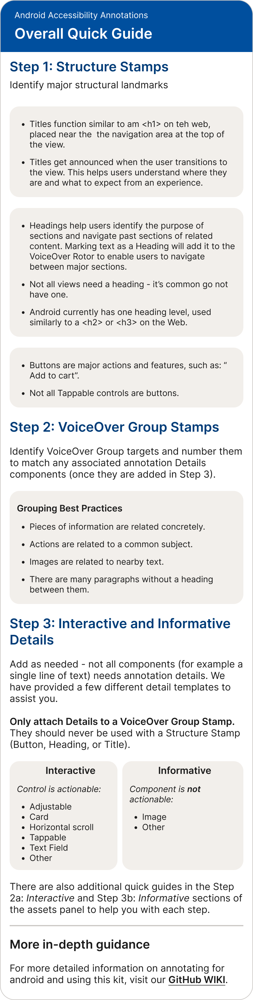
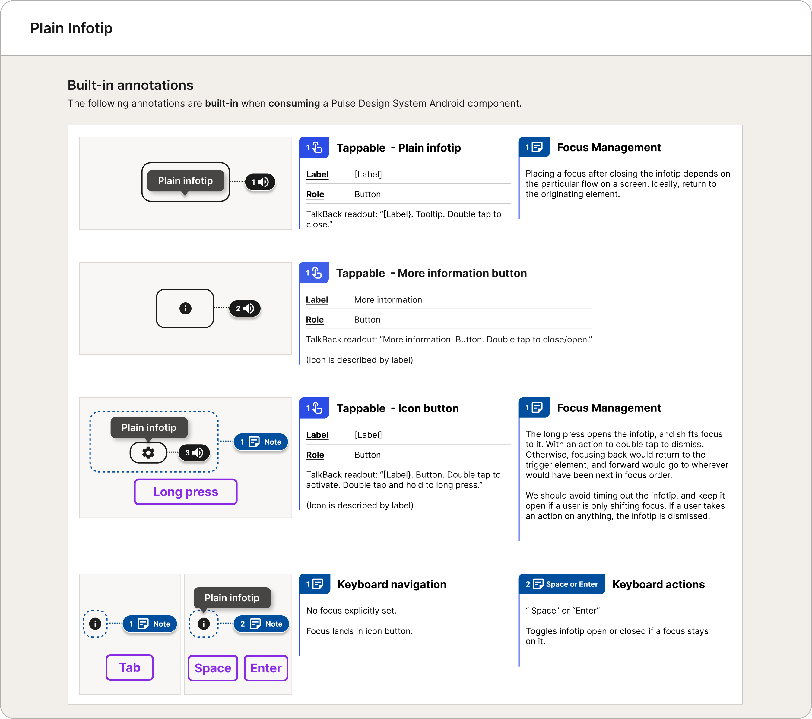
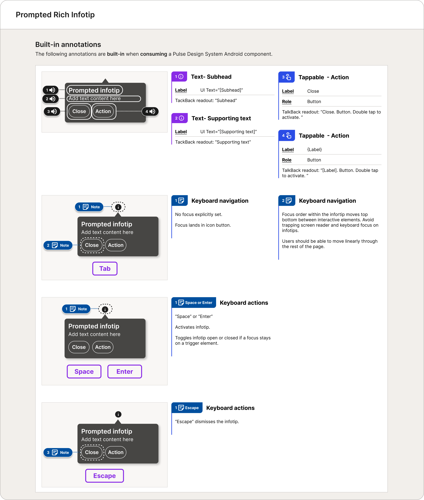
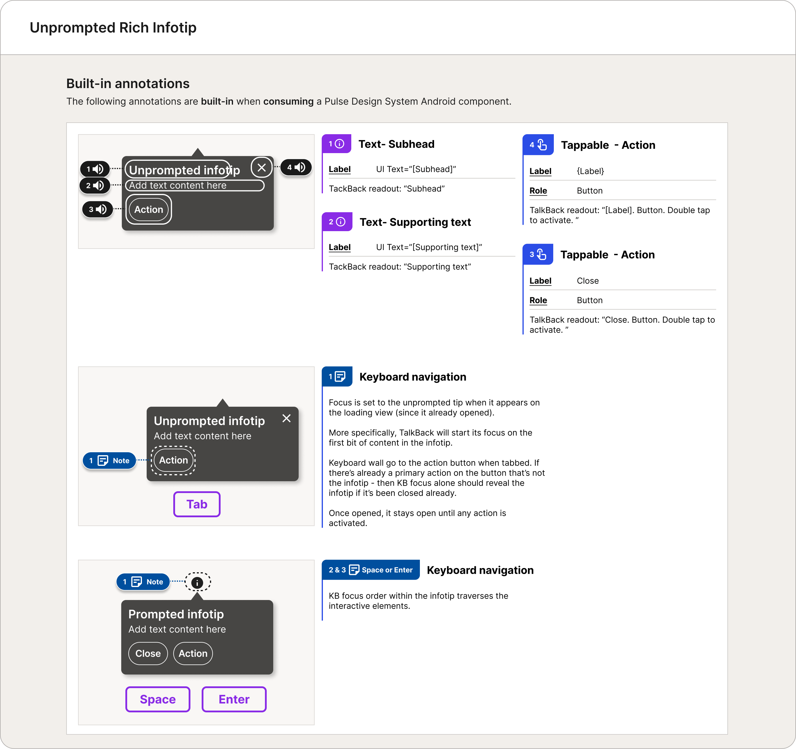

January 2023 – December 2024
Case Study
CVS "Super App" and Pulse Velocity
"Super App" Initiative
Before the January 2025 launch announcement of the CVS Health App (often referred to internally as the "Super App"), there were nearly two years of hard work that made this major release possible.
The years 2023–2024 were especially exciting for the CVS Digital enterprise — and for the design community in particular. The Super App initiative quickly became an all-hands-on-deck effort across the organization. Teams came together around a shared goal: to unify CVS's complex ecosystem into a single, cohesive experience.
The Super App delivered on both iOS and Android platforms:
- A unified CVS Health app that brings prescriptions, benefits, and wellness into one experience
- Family-wide prescription management, personalized health tasks, AI-powered search, and faster in-store pickup — including barcodes and, in some locations, app-unlocked cabinets
- A redesigned home screen that surfaces reminders, orders, and tailored recommendations in one place
For more information read the official press release:
Digital Pulse Design System Team Impact
The Pulse Design System team played a key role in the Super App launch, delivering updated iOS and Android libraries under tight timelines.
At the same time, multiple parallel changes increased complexity:
- Brand shift: Primary color changed from red to blue, impacting many components and requiring engineering updates beyond the system
- Token alignment: Finalized tokens required rapid library updates across design and code
- Android transition: Ongoing shift to Material 2 added complexity to component updates
With compressed timelines, the team adapted quickly:
- Figma-first delivery: Design components shipped ahead of code
- Incremental releases: Components delivered progressively, not as a single drop
Pulse Multi-faceted Support
The Pulse team extended beyond component libraries and documentation, providing hands-on support across product teams.
As CVS shifted to native iOS and Android, many designers—primarily from web backgrounds—were working in unfamiliar ecosystems. Platform-specific patterns, components, and conventions introduced a steep learning curve, often reflected in web patterns carried into native designs.
Pulse played a key role in supporting this transition, helping teams adapt quickly and design confidently within native platforms.
Pulse Office Hours
Twice-weekly Pulse office hours for product designers — an open space for questions, guidance, and knowledge sharing.
Cross-platform and accessibility representation (Web, iOS, Android), supporting a collaborative and approachable environment.
Native Platforms Knowledge Center
A native design knowledge center in Confluence, created in partnership with the Pulse iOS designer, to support designers working on iOS and Android. Documentation of platform fundamentals — screen sizes, resolutions, densities, measurement units, typography — alongside common patterns and a cross-platform component matrix, clarifying usage, context, and differences between iOS and Android.
Design Review Committee
Pulse design system designers as part of the Design Review Committee — overseeing, critiquing, and approving designs before production.
Direct exposure to product needs and real-world use cases, informing system evolution. A platform for advocacy, education on system thinking, and reinforcement of accessibility standards.
Android Team Contribution
Over six months, the Android team delivered 20 core components with supporting usage guidance (component documentation), followed by ongoing custom components and enhancements driven by product needs.
In parallel, design supported engineering to maintain implementation momentum, with components released incrementally and integrated into production flows.
Early adoption in live user journeys validated the system's impact and real-world use.
My Role
I often led the Android team in the absence of consistent PM coverage, running standups, backlog grooming, PI planning, sprint planning, and related ceremonies.
I represented Android in cross-platform workshops and foundational initiatives, shaping team agreements, processes, and creating checklists and templates.
A key initiative was the development of the Pulse design token architecture, where I defined Android-specific token needs, ensuring full component coverage while maintaining a balanced and scalable shared system.
"Super App" Experience on Android
The Pulse Design System team began to see our efforts paying off. The app experiences product designers were crafting increasingly reflected platform specificities and aligned with well-established ecosystem patterns.
Pulse Android components started appearing in production flows and were released in the app. Seeing the fruits of our labor live in real experiences was both reassuring and gratifying.
App Main Sections
Shopping Experience
Health: Scheduling Experience
Our team received both praise and critique, often around speed and the time required for internal processes and decision-making.
We regularly explained why releasing components required multiple cycles—especially when stock iOS and Android components already existed. It raised a common question: why not simply adapt Material components to match brand styles and ship?
These were valid questions, and we addressed them openly.
Accessibility as Baseline of Pulse Quality Assurance
Accessibility was foundational to Pulse quality. Every component, pattern, style, and token went through multidisciplinary review, with designers partnering closely with accessibility specialists, developers, and content strategists to fully vet contributions.
At every step, we asked practical questions: Is it accessible to all users? Can it be fully implemented as designed? Does the content hierarchy work for both visual users and those using assistive technologies?
Even after release, components continued through regression testing and could be flagged for accessibility defects.
Producing high-quality components required rigorous, ongoing validation. To support this, Pulse accessibility designers created an Accessibility Annotations Kit, enabling clear and effective design-to-development handoff.
Infotip is one example of how these standards were applied in practice.




Community Model
Design systems do not innovate — they curate and stabilize an organization's design ecosystem. They are the infrastructure of the building. Only well-researched, tested, and proven components and patterns can become part of that infrastructure, which means prioritizing quality over speed. At the same time, a design system should not become a bottleneck for shipping products.
To balance these needs, CVS design leadership decided to move forward with a contribution model. Community library building teams were formed to create their own product-level libraries, allowing them to innovate and ship faster in response to immediate demands.
The Pulse team then evaluated and "graduated" component and pattern candidates when they met specific criteria — for example, when their use cases extended beyond a single product. After careful evaluation and a rigorous adjustment process to ensure they met Pulse standards, these components could be standardized and absorbed into the Pulse libraries.
Conclusion
The CVS Health App launch was the result of sustained, cross-team effort over several years. For Pulse, it meant consistently delivering under pressure—building foundational libraries, supporting a rapidly scaling design organization, and upholding quality, accessibility, and platform integrity as timelines tightened.
Pulse functioned as both a system and infrastructure—enabling teams to move faster without sacrificing usability or coherence. Through documentation, education, office hours, cross-platform collaboration, and a contribution model, the team helped shape a scalable design ecosystem for an enterprise-level product.
My role spanned design, systems thinking, and leadership. I contributed to the Android library, partnered with engineering and accessibility, led the Android team when needed, represented the platform in cross-team work, and helped define token architecture while balancing platform-specific needs with system integrity.
Seeing components ship in production—and product experiences mature into native, accessible, and scalable solutions—was both validating and rewarding. It reinforced my belief that strong design systems create clarity, trust, and a foundation that enables teams to do their best work.